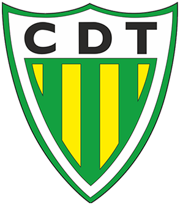

Treinador: Gonçalo Feio
A trajetória de Gonçalo Feio é definida por uma afirmação impetuosa assente no rigor analítico e na intensidade emocional, afirmando-se como um treinador de perfil estratega, disruptivo e de vincada capacidade de imprimir um caráter resiliente e competitivo às suas equipas.
Estádio: João Cardoso
O Estádio João Cardoso ergue-se como um baluarte da resiliência beirã, pautado por uma arquitetura funcional e uma atmosfera de proximidade familiar e apaixonada, afirmando-se como um recinto de perfil acolhedor, combativo e de vincada identidade auriverde.
Estilo de Jogo:
Desde que assumiu o comando do CD Tondela em finais de março de 2026, Gonçalo Feio introduziu um estilo de jogo marcado por um perfil estratega, emocional e de grande exigência competitiva.
"Orgulho Beirão!"